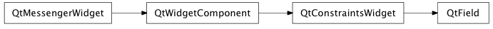

Bases: enaml.widgets.constraints_widget.ConstraintsWidget
A single line editable text widget.
The unicode text to display in the field.
The mask to use for text input. TODO - describe and implement this mask
The validator to use for this field. If the validator provides a client side validator, then text will only be submitted if it passes that validator.
The list of actions which should cause the client to submit its text to the server for validation and update. The currently supported values are ‘lost_focus’ and ‘return_pressed’.
The grayed-out text to display if the field is empty and the widget doesn’t have focus. Defaults to the empty string.
How to display the text in the field. Valid values are ‘normal’ which displays the text as normal, ‘password’ which displays the text with an obscured character, and ‘silent’ which displays no text at all but still allows input.
The maximum length of the field in characters. The default value is Zero and indicates there is no maximum length.
Whether or not the field is read only. Defaults to False.
How strongly a component hugs it’s contents’ width. Fields ignore the width hug by default, so they expand freely in width.
A method called after initialization which allows the widget to bind any event handlers necessary.
alias of __NoInterface__

Bases: enaml.qt.qt_constraints_widget.QtConstraintsWidget
A Qt4 implementation of an Enaml Field.
Handle the ‘set_submit_triggers’ action from the Enaml widget.
Hanlde the ‘set_placeholder’ action from the Enaml widget.